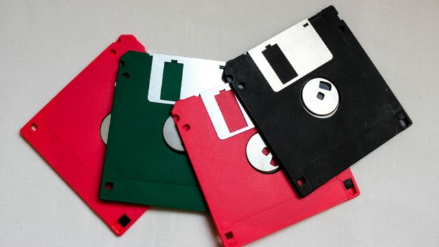

Un disquete o disco flexible ("floppy disk") es un soporte de almacenamiento de datos formado por una pieza circular compuesta por un material magnético y una cubierta de plástico cuadrada o rectangular.

Volver